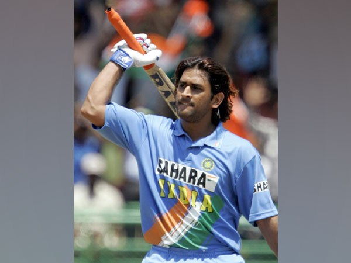
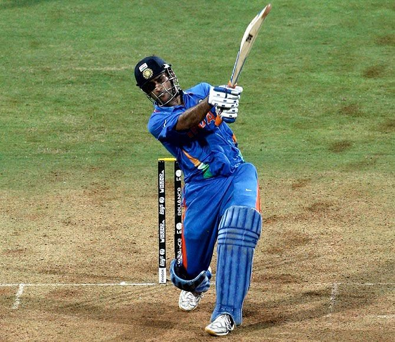
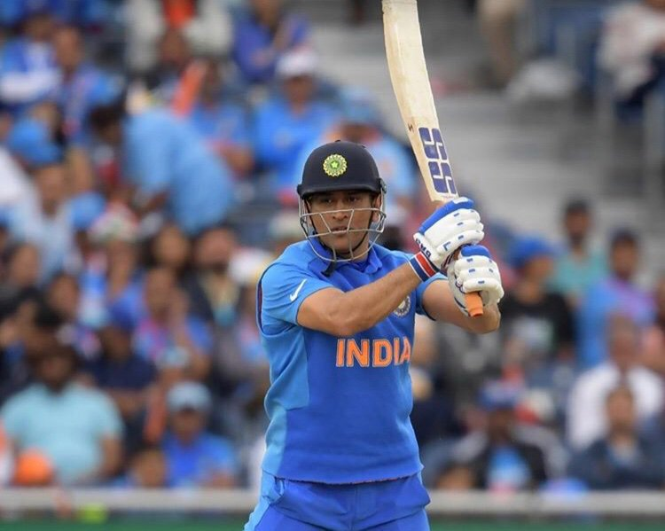

Honorary Lieutenant Colonel (hon. Dr.) Mahendra Singh Dhoni born 7 July 1981), is a former Indian international cricketer who captained the Indian national team in limited-overs formats from 2007 to 2017 and in Test cricket from 2008 to 2014. MS Dhoni is the only captain in the history of cricket to win all ICC trophies. Under his captaincy, India won the inaugural 2007 ICC World Twenty20, the 2010 and 2016 Asia Cups, the 2011 ICC Cricket World Cup and the 2013 ICC Champions Trophy. A right-handed middle-order batsman and wicket-keeper, Dhoni is one of the highest run scorers in One Day Internationals (ODIs) with more than 10,000 runs scored and is considered an effective 'finisher' in limited-overs formats.He is widely regarded as one of the greatest wicket-keeper batsmen and captains in the history of the game. He was also the first wicket-keeper to effect 100 stumpings in ODI cricket.
  